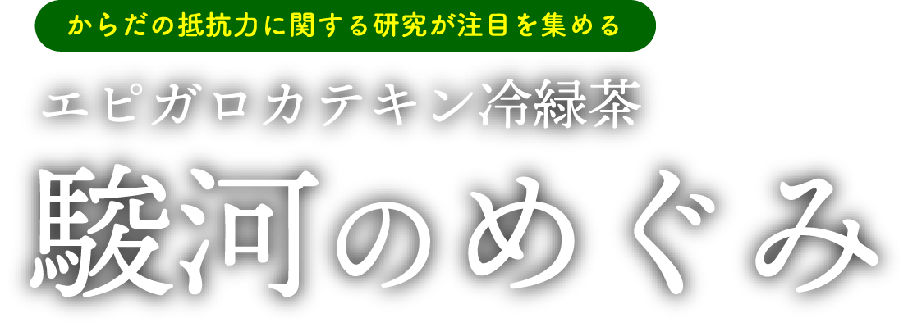
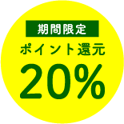
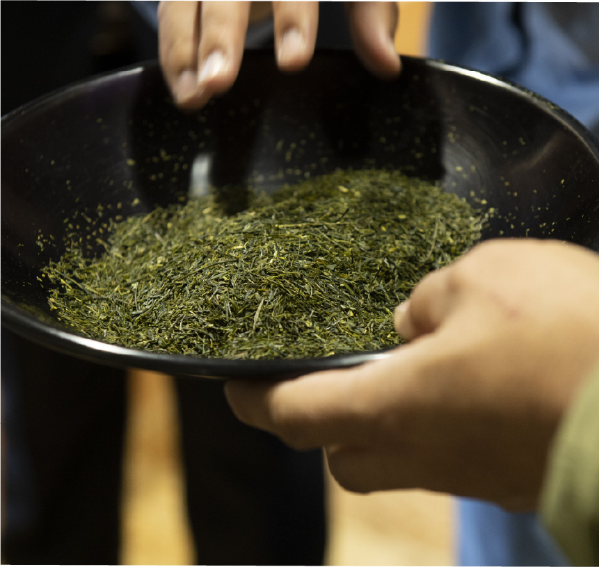
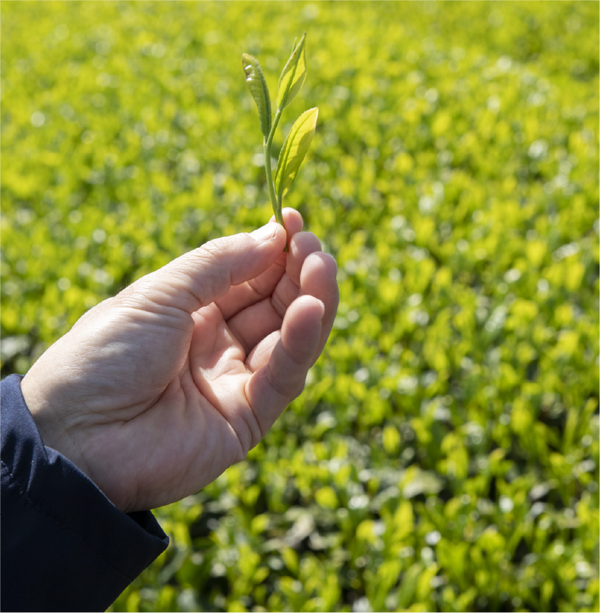
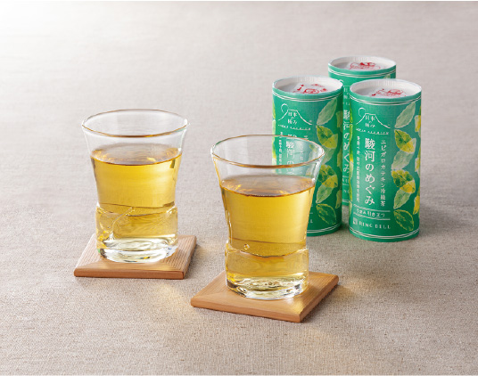

日本で15人しかいない（※）
「茶師十段」が監修した、
繊細な味わい
「駿河のめぐみ」を監修したのは、茶葉の選定や合組（ブレンド、調合）、製造時の品質鑑定などを行う「茶師」の中でも、日本で15人しかいない（※）最高位、十段の田中祥文氏。
お茶の名産地、静岡県の「駿河国」エリアで収穫された茶葉を100％使用し、繊細な味わいと、程よい旨味が上品な味に仕上がっています。
（※）2021年9月現在

からだの抵抗力に関する研究が
注目される
「エピガロカテキン」がたっぷり
「エピガロカテキン」とは、お茶に含まれるカテキンの成分のうちの１つで、からだの抵抗力に関する研究が進められています。市販のペットボトルのお茶に含まれる「エピガロカテキン」は約6mg/100ml（※）に対し、「駿河のめぐみ」は約18mg/100mlとたっぷり。
お茶本来の味と香りをお届けするために、無菌充填包装で製造。環境に優しい紙パックでお届けします。
（※）当社調べ

